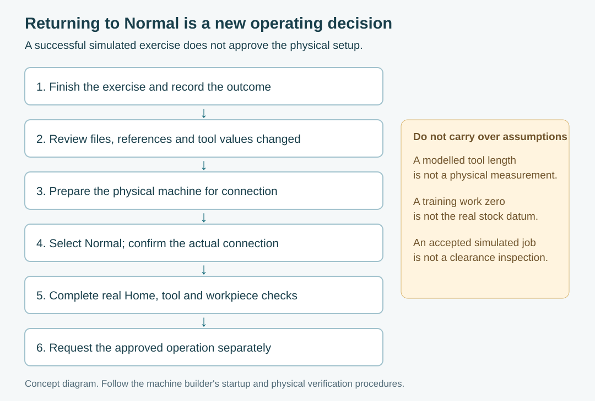

RADONIX · ROUTERXYZ+TC · CHAPTER 20
Operator Manual · English · 9 October 2026
Simulation Mode
Learn the operating sequence on a simulated machine, recognize what the displayed results mean, and make a deliberate transition back to the physical machine.
Expanded draft for review. The exercises teach the controls and operating decisions. Simulation results must be kept separate from acceptance of a physical machine, tool or workpiece.
20.1 Understand what Simulation does and what it cannot prove
Simulation lets you practise operating the application with a software model of the machine. The application still processes commands, follows operating sequences and displays positions and status. Modelled feedback takes the place of selected physical responses, allowing activities such as homing and tool preparation to be exercised without treating the display as evidence of real machinery moving.
For a new operator, its main value is familiarity. You can learn where to look after pressing a control, recognize a waiting operation, follow a tool sequence and explain why a command is unavailable. The objective is to understand the sequence and its indications before performing that sequence under supervision on the physical machine.
Distinguish three different activities
| Activity | What you are doing | What the result means |
|---|---|---|
| Inspecting the program preview | Reading prepared geometry and source, rotating or zooming the view. | You have inspected the displayed job. Moving the camera does not execute it. |
| Running in Simulation | Issuing operating commands to a connected simulated session. | The configured software and model have responded to that exercise. |
| Operating in Normal | Using the controller in the real-machine operating mode. | Commands can have physical consequences and require the normal machine checks. |
A visible toolpath is not an indication that Simulation is active. The same application provides a preview during ordinary machine operation. Likewise, a stationary physical machine is not proof that commands are simulated: a real session may simply be idle or waiting for another condition.
The model represents selected behavior
The supplied model covers home-switch responses, spindle and tool-grip feedback, tool-probe contact, roller feedback and a healthy emergency-circuit input. These responses help the ordinary machine-control sequences progress. They do not reproduce every possible physical fault, every accessory or every consequence of cutting material.
In particular, the emergency input supplied by the model represents a healthy circuit. It is not a test of a physical emergency-stop button, relay, contactor or stopping system. A successful exercise cannot be recorded as an emergency-circuit inspection.
Simulation also does not establish that a cutter clears a clamp, that the actual holder is seated correctly, that air pressure is sufficient, or that the real spindle stops within a particular time. The toolpath display is not a complete model of all objects in the work area. Those checks belong to the real-machine setup and acceptance procedure.
Example: the virtual tool exchange completes
The simulated sequence releases one tool, visits the configured holder and confirms another tool. This is useful evidence that the exercise progressed through its expected stages. It does not demonstrate that the physical holder is in the same position or that its actual gripping mechanism works correctly.
Use a defined question for each exercise: “Can I identify the current mode?”, “Can I pause and continue this approved training job?” or “Can I recognize a failed preparation?” Record the observed answer. Avoid the broader conclusion “the machine is safe” when the exercise only tested your understanding of a displayed sequence.
Before using any movement or equipment command for practice, establish that the active connected session really is Simulation. The next section explains how to make that distinction using both the selected mode and the actual connection indication.
20.2 Identify the selected mode and the actual connected session
The mode setting and the connection indication answer different questions. The setting tells the application which type of session to request. The connection state tells you whether a session has actually connected. You need both pieces of information before deciding that a training command belongs to Simulation.
In Configuration, the Controller group contains Mode with two choices: Simulation and Normal. Simulation is the initial default in the supplied configuration. However, the choice is a saved setting. Do not assume that every launch returns to Simulation or that another operator left the same mode selected.
Read the main-window indication in context
The Simulation lamp lights when the simulated session is operational. In Normal mode the Online lamp reports physical MM detection.
Use Controller / Mode and the completed connection result to identify a simulation session.
| What you observe | Interpretation | Operator action |
|---|---|---|
| Simulation selected, connection still starting | A simulated session has been requested but is not yet confirmed ready. | Wait for the final connection result. |
| Simulation connection confirmed in the report | The connected runtime is simulated. | Check the exercise prerequisites before issuing commands. |
| Online lamp illuminated | The physical MM is present. | Check the connection result and axis readiness before motion. |
| Simulation requested with a failed connection | The simulated runtime is unavailable. | Read the connection state and reported problem. |
| Selected value and observed result seem inconsistent | The transition or result has not been understood. | Resolve the state before movement or equipment commands. |
The application can show an informational Simulation notice when the main window first appears with Simulation selected. Treat it as a useful reminder of the selected mode at startup. It does not replace checking the current connected session after a later mode change, failed connection or restart.
Selected mode and confirmed simulated connection
Capture the delivered application's Controller/Mode selection and a separate main-window view of the reported simulation connection result. Annotate which image shows the requested setting and which shows the actual connected result. Keep the controller stationary and use an approved training installation.
Suggested asset: assets/images/20-mode-and-connection.png.
Example: the startup message has been dismissed
You remember seeing a Simulation notice earlier, but another mode change has since been requested. Your memory of that notice does not establish the present mode. Read the current setting and active connection indication again before starting the exercise.
Make this check a habit at the start of training, after reconnecting and whenever you return to a workstation used by someone else. The appearance of a familiar file, toolpath or coordinate display is not a substitute for identifying the session that will receive the next command.
20.3 Prepare an idle session before changing mode
Changing mode is an operating action. It changes the type of controller session and initiates a connection transition. It is not a display preference and should not be used as a quick escape from a paused job, an unfinished tool exchange or a problem you have not yet understood.
First identify what the application is doing. A program may be active while no axis is moving, for example during a pause or equipment wait. Homing, positioning and tool operations also have their own progress and completion conditions. Wait for a normal completion or use the relevant stopping and recovery procedure before attempting a mode change.
Conditions checked by the application
| Condition | What the operator should establish |
|---|---|
| Operator access | The required operating access has been granted for this application session. |
| No program preparation | A file is not currently loading or being prepared. |
| No active program or motion | The main program and motion are no longer active; a pause alone is insufficient. |
| No managed machine operation | Home, head positioning and tool operations have finished or been resolved through their proper procedures. |
| No connection transition | The application is not already connecting, disconnecting or changing mode. |
| Suitable connection state | The controller is in a settled Online, Offline or Failed state, rather than an intermediate transition. |
If the mode control is disabled, treat that as information about readiness. Repeatedly pressing a shortcut does not remove the unmet condition. Check the program state, current operation, loading status and access requirements. Where the state is unclear, retain the displayed message and seek help with that condition.
Finish the old activity deliberately
If a production job is interrupted, record the work already performed and the intended recovery before leaving its session. Changing mode does not carry an approved recovery decision into a new simulated machine. Follow Chapter 17 for the distinction between an ordinary pause, Stop and a new start.
For a tool operation, record which stage finished and whether the actual tool state is known. A mode change is not a method of completing a partly released holder or acknowledging an unknown tool. Resolve the equipment condition under its own procedure first.
Prepare the training exercise as well. Identify the approved file, required tool and work-reference setup, and the action you intend to practise. If training requires different settings, have the responsible person define and control those changes. Simulation uses the application's machine configuration; it is not a promise of a separate disposable copy of every setting.
Example: the preview has stopped advancing
The operator wants to change mode because the displayed path is no longer moving. The program is actually paused and remains active. The correct response is to decide whether to continue or stop that job through its normal controls, then verify the resulting state. A stationary preview does not by itself make the mode control available.
Entering Configuration may have a separate access requirement from ordinary operation. Do not confuse permission to change mode with permission to change all configuration values in the same window. Use only the mode control for this task; other settings retain their own access and operating rules.
Once the old activity is settled, the exercise is identified and the mode command is available, make one intentional selection and observe its result. The next section follows that transition from selection through confirmed connection.
20.4 Change mode once and follow the reconnection to its result
With the previous activity settled, use Controller > Mode in Configuration to select Simulation. Use the control's normal value-selection and commit action, then observe the connection transition. The change is applied immediately; it does not wait for you to close Configuration with OK.
The application also provides the ChangeMode command. Its default shortcut is Ctrl+Shift+Alt+Space. It toggles the existing selection between Simulation and Normal, so it must not be treated as a dedicated “enter Simulation” shortcut. Check the current value before using it and the result afterwards. An installed configuration may assign a different shortcut.
Follow the transition step by step
- Identify the destination mode. For a training exercise, the intended value is Simulation. Verify the current selection before changing it.
- Make one request. Select the value or use the configured ChangeMode command once. Do not repeatedly toggle while waiting for a response.
- Wait for the old session to disconnect. If a session is connected, the application waits for its disconnect result before opening the requested session.
- Allow the connection checks to complete. The machine settings are validated and applied before the new session is requested. Invalid settings can prevent connection even when Simulation is selected.
- Read the final result. Confirm an active simulated connection or investigate the reported failure. A changed setting is not itself confirmation of successful connection.
- Recheck readiness. Establish the new session's homing, tool, reference and job state before beginning the exercise.
| Operator action or event | Practical consequence |
|---|---|
| Commit a different Mode value | Requests an immediate reconnect into that mode when the operating conditions permit it. |
| Use ChangeMode | Toggles the selected value; it can lead toward Normal as well as Simulation. |
| Press Configuration Cancel afterwards | Does not undo this live mode operation or reconnect to the previous mode. |
| Connection validation fails | The requested session is not established; resolve the stated settings problem. |
| Connection completes successfully | The new session can be assessed for its own operating readiness. |
Configuration Cancel is not a return-to-mode button
Mode is deliberately treated as a live operation in the Configuration window. If you select Simulation and then cancel Configuration, do not expect the former normal connection to reappear. To return to another mode, make a separate deliberate mode change after verifying that the session is idle and the destination is appropriate.
This distinction is especially important during training. A person may open Configuration, change Mode, then press Cancel believing that all activity has been abandoned. The connection operation has already been requested. Read the actual connection indication before interpreting any later command.
Example: an accidental second shortcut press
The first request successfully selects Simulation. After the transition finishes, another press of the same toggle shortcut can request Normal. Waiting for completion and checking the result is more reliable than pressing the shortcut repeatedly until the screen looks familiar.
If the request fails, note whether the problem occurred while disconnecting, validating the configuration or connecting. Keep the actual message and technical details. Do not assume that a failed change has automatically restored the earlier connection, and do not use a production-mode attempt simply to make a training failure disappear.
Once Simulation is confirmed connected, proceed with a fresh readiness review. The application has changed sessions; it has not certified that every value visible on the screen is suitable for the next training command.
20.5 Establish the simulated machine and protect the real setup data
A connected simulated session is the starting point for preparation, not the end of it. Inspect the current state, complete the required homing procedure and identify the tools and work reference used by the exercise. Use the same habit of checking the result after each command that you will need on the physical machine.
Begin with Home as described in Chapter 6, when the training procedure calls for establishing machine position. The model produces home-switch feedback according to axis position. Wait for the homing sequence to finish and inspect the aggregate Homed indication; do not infer completion from one axis stopping or one coordinate becoming zero.
Machine coordinates and work coordinates still have different purposes
Machine position describes the established machine travel system. The work reference places the job relative to that system. Setting a work zero is not a replacement for Home. Conversely, completing Home does not determine where an approved sample part should be located.
Use Chapter 5 and Chapter 8 to prepare the approved training reference. Before changing a value, confirm which reference is selected and what the exercise expects. A convenient-looking number is not sufficient reason to overwrite a production setup value.
| Item | Training check | Keep separate from |
|---|---|---|
| Connected mode | The actual session is confirmed Simulation. | A remembered startup notice. |
| Home result | The homing sequence has finished and all required motors report homed. | The displayed position of one axis. |
| Work reference | The selected origin and values belong to the exercise. | The physical production stock datum. |
| Tools and stations | The required training tools and configured stations are coherent. | Proof that physical holders occupy those locations. |
| Job file | The correct training source and revision are identified. | A production file with a similar name. |
| Changed values | Every intentional setup change has an approved record and disposition. | An assumption that leaving Simulation discards all edits. |
Simulation is not an automatic copy of your settings
The simulation is built from the machine settings used by this application. Mode itself is persisted, and the ordinary setting and file workflows continue to apply. Do not assume that changing a work reference, tool value or source file becomes temporary merely because Simulation is active.
If a practice exercise needs a different setup, agree with the responsible person how that configuration will be prepared, identified and restored or retained. Keep the approved original values available through the shop's existing records. This manual does not ask an operator to invent a separate controller configuration or alter mappings to make an exercise pass.
Example: a training work zero is entered
The operator enters a convenient work reference for a sample and finishes the exercise. Returning to Normal does not establish that this value matches the actual stock. The reference must be reviewed against the real setup before production, whether the value is still displayed or has changed during the transition.
After Home, practise a small approved step movement using Chapter 7. Identify the selected axis, direction and step before the command, then compare the resulting coordinate change. This connects the control you pressed with the display you should observe, without turning the exercise into uncontrolled exploration.
Finish this preparation stage with a short verbal check: connected Simulation, required Home completed, correct training reference, known tool setup and identified file. Only then proceed to a full program exercise.
20.6 Practise a complete job with deliberate observation points
Choose a small approved training program whose expected operations are understood. A short, familiar job makes it easier to connect the source, preview, coordinates and equipment indications. A long production file with unfamiliar tool changes is a poor first exercise even if it loads without an error.
State the objective before loading: for example, identify the start sequence, pause during an ordinary cutting move, continue from that pause and observe completion. Do not combine a first program exercise with unfamiliar source editing or a new tool-station configuration. Learn one operating decision at a time.
Load and review before Run
Use Chapter 14 to open the intended file and wait for preparation. Read diagnostics rather than relying only on the appearance of geometry. Then use Chapter 15 to inspect the program dimensions, references, tools and route.
Simulation does not make a rejected program acceptable. If loading reports a source, geometry or configuration problem, resolve it through the appropriate procedure before the exercise continues. Do not edit away an unfamiliar equipment instruction simply to produce a moving preview.
| Stage | What to identify before proceeding |
|---|---|
| File preparation | Correct file identity, final preparation result and relevant diagnostics. |
| Pre-run review | Intended start, required tool, work reference and expected first movement. |
| Start sequence | Any tool preparation or positioning before the main cutting path. |
| Ordinary program motion | The relationship between source progression, position and displayed path. |
| Pause | The stopped movement and retained active-job state. |
| Continue | The expected continuation after checking the current conditions. |
| Completion | The final program state, rather than only a familiar endpoint on the screen. |
Use the controls as operating decisions
- Confirm Simulation again. Check the active connection indication immediately before starting the exercise.
- Review the current feed setting. Use the value specified for the exercise. Do not assume a previous operator left the intended percentage.
- Request Run once. Observe preparation and approach before expecting the ordinary machining path to advance.
- Practise Pause at the agreed point. Wait for the resulting state and explain what is retained. Do not use a mode change to end the pause.
- Continue under the exercise plan. For the first exercise, leave the head and setup unchanged while paused. More advanced return-to-work practice belongs in a separate supervised exercise.
- Observe the end. Record whether the job completed, was stopped or encountered a fault. Those outcomes are different.
Use Chapter 16 for the full Run procedure and Chapter 17 for stopping and continuation. In a separate exercise, practise Reset and explain why its following reset differs from an ordinary retained pause. Do not describe Reset as merely another Pause button.
Example: a wait before the path advances
After Run, the main cutting path has not yet moved because the operation is preparing a tool or an entry position. Look at the reported operation and expected sequence. Repeated Run requests do not establish what stage is pending.
When the exercise is complete, write down what you actually observed. “Paused and continued the approved sample in Simulation” is a useful result. “The production part is ready” goes beyond what this exercise established.
20.7 Understand the simulated tool, spindle, probe and roller responses
Equipment exercises are useful once you can identify the session and operate a basic job. They let you follow the order of actions and confirmations that accompany a tool change or measurement. Use an approved training configuration with known tool stations and probe position; the model depends on those values.
The ordinary control sequences remain important. Simulation does not mean that every equipment request immediately succeeds or that a missing prerequisite is ignored. An incoherent station, an unavailable signal or an unfinished operation can still prevent the sequence from reaching the expected result.
| Modelled item | What the exercise can demonstrate | What remains a physical check |
|---|---|---|
| Home switches | Position-dependent switch responses during Home. | Actual switch wiring, mounting and repeatability. |
| Tool release and clamp | Delayed feedback and pickup at a configured enabled holder. | Holder seating, grip force and real release mechanics. |
| Spindle rotation | Simulated rotation feedback and a modelled coast-down response. | Actual speed, direction and stopping time. |
| Tool probe | Contact based on simulated position and a modelled tool length. | Probe calibration, physical tool length and measurement accuracy. |
| Roller feedback | Delayed responses associated with roller outputs. | Actual roller position, clearance, pressure and sensor operation. |
| Healthy equipment inputs | The normal sequence under the model's supplied healthy conditions. | Real fault detection and the machine's safety inspection. |
Follow the tool-change stages
For a supervised exchange exercise, use Chapter 11. Identify the present and requested tools, observe the route and wait for the final result. The model establishes pickup from the configured holder location and its enabled state. Merely requesting a tool number does not make every station arrangement coherent.
Watch the difference between release, pickup and final confirmation. The exercise should teach you to wait for the confirmed result rather than deciding that an exchange is complete because the head has reached the holder. If the operation fails, retain the stage and message for review instead of repeatedly commanding another exchange.
Treat probe results as training data
For measurement practice, follow Chapter 12. The model evaluates contact using the probe location, simulated axis positions and a tool length captured for the simulated session. It does not physically touch a real cutter.
A nonzero value returned by a simulated measurement is therefore not an approved measurement of the actual installed tool. Also, do not assume that measurement-related values are disposable simply because they were obtained during practice. Include them in the record of data that must be reviewed before returning to production.
Example: measurement repeats successfully
The same training tool gives a repeatable result in Simulation. This shows that the exercise can follow the modelled contact sequence. It does not establish the real probe's repeatability or the actual length of the cutter mounted at the machine.
For spindle and roller exercises, follow Chapter 10 and Chapter 13. Observe the command and its feedback as separate events. The model includes delays; an output request and a confirmed state need not appear at exactly the same moment.
Do not alter timing, mappings or saved machine-control programs to force a training success. If the supplied configuration and the expected exercise disagree, have the responsible person resolve that mismatch. The operator's task is to recognize and report the discrepancy accurately.
20.8 Recognize a simulation problem and report the right evidence
A training session can fail to connect, reject a command, wait for equipment feedback or report a simulation-model failure. These are different situations. Begin by identifying the stage at which progress stopped rather than treating every problem as “Simulation does not work.”
Read the current message before dismissing it. Record the selected mode, actual connection state, requested action and last completed stage. If a file was involved, record its identity and preparation result. This gives the person investigating the issue a specific sequence to examine.
Separate an unavailable command from a failed operation
| Observation | First check | Appropriate response |
|---|---|---|
| Mode cannot be changed | Access, program activity, loading and connection transition. | Resolve the current activity or access condition. |
| Simulation selected but not connected | The final connection message and settings validation result. | Investigate connection rather than issuing motion commands. |
| Program preparation rejected | The source or geometry diagnostic. | Use the approved file-correction procedure. |
| Tool or probe operation waits or fails | The reported stage, configured station/probe and required feedback. | Record the mismatch and follow the operation's recovery procedure. |
| A simulation module failure is reported | The named model and exact error details. | End the exercise through the appropriate controls and seek configuration or support review. |
| A familiar display remains after a problem | Whether the session and operation are still valid. | Do not treat old geometry or a retained number as confirmation of success. |
The application validates machine settings before connecting. Simulation does not bypass this validation. Similarly, its feedback models depend on the configured signal arrangement. A fixed or unsupported input assignment can be incompatible with a model that needs to change that input during the exercise.
As an operator, you do not need to diagnose the internal signal implementation. You do need to preserve the exact message and explain which action caused it. Do not change input mappings, force values or edit machine-control logic to suppress a symptom unless that work has been specifically assigned to the responsible qualified person.
A model failure does not mean the exercise completed
If one of the simulation models throws an error, the simulation host stops its updates, resets its driven inputs and reports the model failure. Do not interpret this as an orderly completion of the machining or tool sequence. Establish the operation state and use its proper stopping and recovery controls before deciding what to do next.
A reconnect rebuilds the simulated session and resets model history. That can be part of a reviewed recovery, but it is not an explanation of the original problem. Record the evidence first. Otherwise, repeated reconnects can erase the sequence you needed to describe without resolving its cause.
A reported simulation problem
Capture an approved training example showing the exact status or report message and enough context to identify the connection mode and requested operation. Use an existing controlled example; do not deliberately interrupt a production operation or corrupt a configuration to obtain this image.
Suggested asset: assets/images/20-simulation-diagnostic.png.
Example: the tool setter never confirms contact
The useful report identifies the training tool, measurement stage, probe setup and displayed message. “The tool was moving down” alone does not show whether the modelled probe location and the exercise were consistent. Keep the exercise stopped while that discrepancy is reviewed.
Resume only after the cause and recovery are understood, then repeat the specific failed step under the approved plan. A successful retry should be recorded as a new observation, not used to erase the earlier failure from the training record.
20.9 Return to Normal with a fresh physical-machine review
Returning to Normal deserves the same deliberate preparation as starting the physical machine. End the training exercise, establish that the session is idle and review what changed during practice. The simulated machine's apparent success does not establish the condition of the real machine waiting beside the computer.
Do not change to Normal merely to see whether an unresolved training error disappears. Normal is the mode intended for real-machine operation. Before requesting its connection, follow the machine builder's startup requirements and confirm that the physical work area is ready for the controller to connect.
Review what the exercise changed
Check the source files, selected program, work references, tool values, measurement results and any settings intentionally changed. Decide which values are approved for retention and which require restoration through the shop's procedure. Neither a mode change nor closing Configuration with Cancel provides a general rollback of training work.
| Item | Required real-machine review |
|---|---|
| Controller connection | Normal was intentionally selected and the actual normal connection is confirmed. |
| Machine reference | Complete the required physical Home procedure and verify its result. |
| Installed tool | Identify the real tool and holder; reconcile the recorded tool state. |
| Tool measurement and compensation | Use approved physical tool data, not an assumed simulated measurement. |
| Stock and work reference | Verify clamping, physical datum and selected work origin. |
| Equipment | Check actual pressure, spindle, rollers, sensors and other required equipment. |
| Program and start intention | Prepare the approved revision and review its intended entry again. |
| Clearance | Inspect the actual approach, tool-change and cutting routes against the physical setup. |

Make and confirm the transition
Use the same idle-state requirements and deliberate mode-change procedure described earlier, this time selecting Normal. Wait for the simulated session to close and the normal connection result to appear. Confirm the normal runtime connection result, the physical MM and the machine readiness indications.
If connection fails, investigate that failure under the normal startup procedure. Do not treat the previously successful simulated connection as evidence that the physical network, controller or equipment is healthy. The two sessions obtain their operating feedback differently.
After connection, follow Chapter 3 and the relevant Home, tool and work-reference chapters. Establish readiness from current observations. Numbers retained on screen, a familiar file name or a previous training checklist do not replace those physical checks.
Example: the training tool and real tool differ
The exercise used a modelled tool, but the physical spindle contains another cutter. Even if the displayed program and tool number look familiar, reconcile the actual holder and approved tool data before any production motion. The simulated result cannot identify the physical object in the spindle.
Finally, review the job as a real operation using Chapter 16. Switching mode is not a Run request, and successful connection is not permission to begin cutting. The next motion command should have a known purpose, a verified setup and an understood first movement.
20.10 Complete a supervised exercise and record what it established
Use this final exercise to bring the chapter together. The trainer should supply a known sample file, a coherent training setup and an expected sequence. The operator should be able to explain each decision in ordinary language without needing to understand the internal machine-control program.
The exercise is complete when the intended observations have been made and recorded, the session has been left in a known state and any changed data has a clear disposition. Completing a simulated job is one part of that result. It is not the only measure of successful training.
Use a staged practice plan
- Identify the session. Point out the selected Mode and actual connection indication. Explain why the word Simulation on its own is insufficient when the controller is disconnected.
- Explain a mode change. Describe the idle-state requirements, the reconnect sequence and why Configuration Cancel does not reverse the operation. A physical transition to Normal is not required merely to answer this question.
- Prepare the exercise. Complete the approved Home and work-reference preparation. Identify the required tool and file, and record any setup values changed.
- Practise basic movement. Make the approved small step movement and explain the coordinate result. Identify which display represents machine position and which represents work position.
- Run the sample. Review the prepared job, follow its start sequence and perform the planned ordinary Pause and Continue exercise.
- Practise the distinct Reset decision. In a separately planned run, observe Reset and its resulting reset. Explain why a new start decision is required.
- Add equipment practice when ready. Perform only the approved tool or measurement exercises appropriate to the supplied setup.
- Close the exercise. Record the outcome, unresolved problems and changed values. Leave a clear handover stating the selected and connected modes.
| Record | Information to retain |
|---|---|
| Operator, trainer and date | Who performed and reviewed the exercise. |
| Training identity | Application/setup identification and the exact sample file or approved revision. |
| Session confirmation | Selected Simulation and observed connected result. |
| Exercises completed | Home, step movement, loading, Run, Pause/Continue, Reset, and any approved equipment practice. |
| Observed outcomes | Expected results obtained, unexpected behavior and relevant messages. |
| Data changed | Files, work references, tool values or settings changed and their approved final disposition. |
| Handover | The final mode, connection and operation state, plus work that still requires review. |
This is a suggested record for the shop's existing training process, not an automatically generated application report. Keep observations specific. “Correctly identified a paused active program” is more useful than a general tick beside “knows simulation.”
Questions the operator should be able to answer
If Simulation is selected but connection has failed, can you begin the exercise? No: establish a working simulated connection first. If an exercise finishes successfully, has it verified physical clamp clearance? No: that requires examination of the actual setup.
If the shortcut changes Mode, does pressing it again always select Simulation? No: it toggles the current value. If you close Configuration with Cancel after changing Mode, does the old session automatically return? No: Mode is a live operation. If a simulated tool measurement produces a number, is that the approved length of the real cutter? No: it is a model-derived training result.
Finally, explain what must happen before returning to production: settle the exercise, review changed data, prepare the real machine, intentionally select and confirm Normal, then complete the physical startup and job checks. If any step remains unclear, repeat that part with the trainer before using the corresponding command on the physical machine.
The next chapter covers the Configuration window. It builds on the distinction introduced here between inspecting a value, editing a setting and invoking an operation that takes effect immediately.
Documentation basis
Checked against the source available on 9 October 2026. No physical machine or live simulated session was operated for this documentation review. The delivered configuration and saved PLC programs affect the behavior. Marked screenshot locations require capture from the delivered application.
MainForm.Connection.csMainForm.Runtime.csMachineCommandAvailability.csMainForm.Bindings.csConfiguration/Controller/ToolPathLinks.csConfiguration/GeneralLinks.csConfiguration/Controller/ControllerLinks.csConfiguration/KeyboardLinks.csSimulation/SimulationHost.csSimulation/ControllerSimulationRuntime.csSimulation/PositionSwitchSimulation.csSimulation/SpindleSimulation.csSimulation/ToolProbeSimulation.csSimulation/DigitalFeedbackSimulation.cs